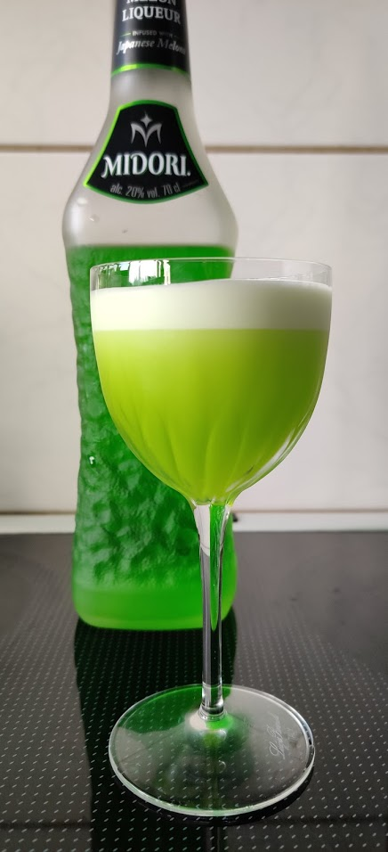

- 60 ml Midori (or similar Green Lemon Liqueur)
- 30 ml Lime juice
- 1 Egg white
Process: Shake with ice and strain into glass.
The Midori is sweet enough for us to not need any sugar. The Midori is kinda bubble gummy in taste.
IDEA: I have seen some places recommend using Lemon juice (or mixing it 50/50). Doing that might improve the sour taste.